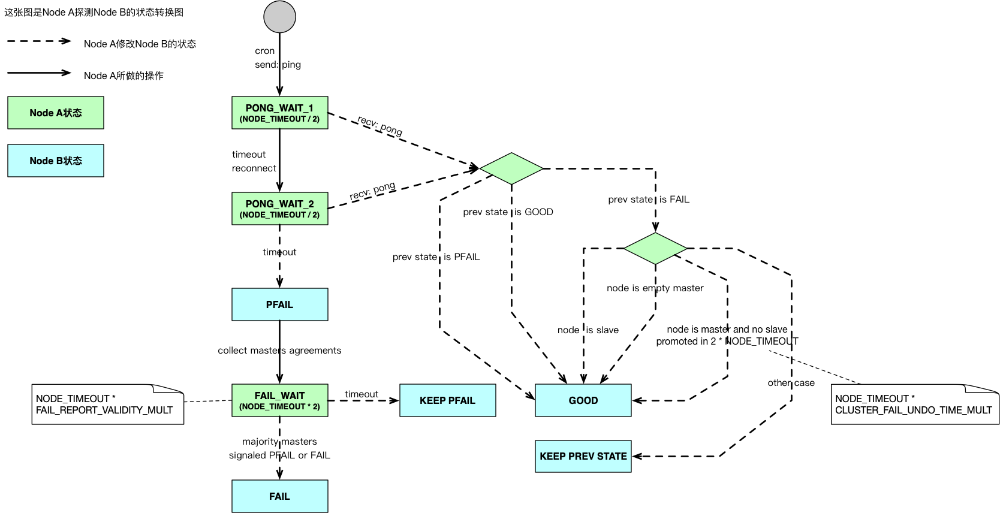

本笔记是对Redis Cluster Spec - Failure Detection的归纳总结
状态转换图
- 每个Node在本地维护了一张其他Node的状态表，并根据Failure Detection算法更新这张表里的Node的状态
- 修改Node状态表里的Node的状态为GOOD（在文档中称之为Clear Flags）、PFAIL，不需要共识（大多数Master Node同意）。
- 修改Node状态表里的Node的状态为FAIL则需要共识，一旦设置成功要将这个消息传播给所有能连接的Node，其他Node收到这个信息后也要更新本地Node状态表，将对应Node的状态更新为FAIL。
下面是状态转换图，例举的是Node A观察Node B的例子：

少数派和多数派
多数派：拥有多数Master的一方，可含有Slave。
少数派：拥有少数Master的一方，可含有Slave。
少数派视角
少数派只会看到大多数Master处于PFAIL/FAIL状态，0-所有Slave处于PFAIL/FAIL状态。
多数派视角
多数派只会看到少数Master处于PFAIL/FAIL状态，0-所有Slave处于PFAIL/FAIL状态。
不会存在以下情况：多数派看到大多数Master处于FAIL状态，因为大多数Master处于FAIL就意味着活着的Master们变成了少数派，这就矛盾了。
一些自问自答
Q：为何少数派能够看到Master处于FAIL状态？不是说要大多数Master同意才能变成FAIL状态吗？ A：考虑这个情况，在Partition发生的前一秒某些Master被决定为FAIL，随即Partition发生，那么在少数派眼里这些Master依然是处于FAIL状态的。
Q：这里的每个Node是Slave还是Master呢？ A：随便，只要是Node就行。
Q：既然每个Master独占的负责Slots，那么少数派继续工作为啥不可以，反正各自管各自的。 A：因为在多数派方，这个Master有可能会被Slave顶替，如果允许少数派继续工作，那么就会形成两个Master，造成split brain
Q：少数派节点是如何知道自己应该停止工作的？ A：它发现大多数Master变成了PFAIL / FAIL 状态时，就知道自己不能工作了，Redis源码里是这么写的。
Q：多数派节点时如何知道自己应该停止工作的？ A：如果这个Cluster要求所有Slots被覆盖，那么当有一个Master处于FAIL状态时，便停止工作，见源码。如果不要求，则继续工作，只不过部分Slots的操作会报错。